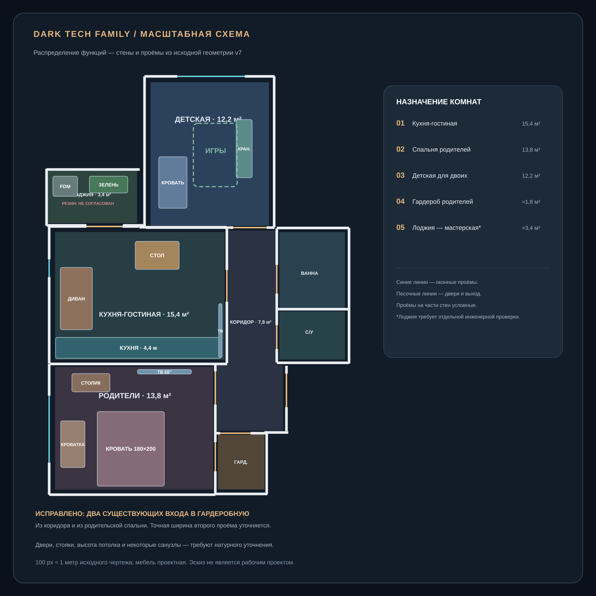
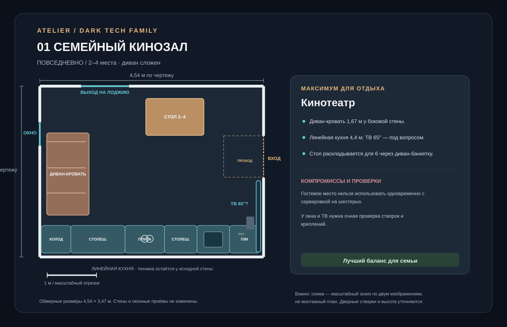
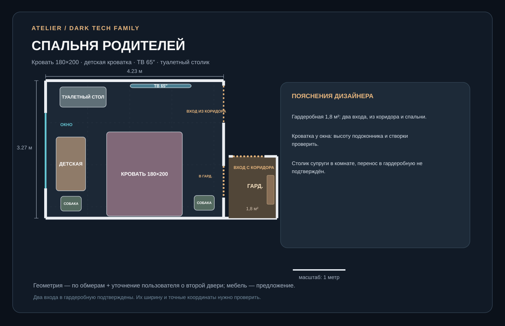
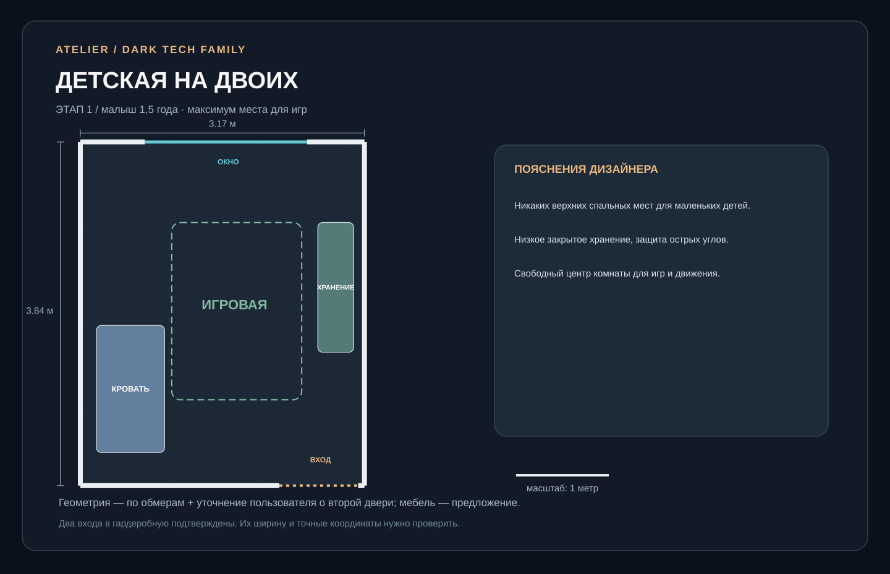

Правильное распределение комнат
Комната 13,8 м² с примыкающей гардеробной — родительская. Комната 12,2 м² — детская. Гардеробная имеет два существующих входа — из коридора и спальни родителей. Положение второго проёма на схеме ориентировочное до обмера.

Три варианта в масштабе
Переключайте концепцию и бытовой сценарий. На планах показаны реальные габариты предметов, их размещение относительно окон, проходов и кухни. Прямоугольник кухни — упрощённый габарит по обмеру, а не повторение всех выступов стен.


Семейный кинотеатр
Комфортный диван-кровать и ТВ-зона важнее дополнительного рабочего стола.
Трансформер
Откидной стол для ноутбука и закрытое хранение оборудования для сведения.
Кулинарный центр
Выдвижная подготовительная поверхность без постоянного острова.
Кровать 180×200, телевизор и детская кроватка
Отдельного компьютерного стола нет. Туалетный столик — в комнате. Два входа в гардеробную сохранены: из коридора и спальни; размещение столика внутри пока не обосновано.

Одна комната — три этапа взросления
Высокую кровать не используем для малышей. Все три схемы сохраняют одно и то же окно и вход.


Что пока не следует считать готовым к ремонту
Рекомендованное направление
A + выдвижная столешница из В — наиболее близко к вашим приоритетам: кинотеатр, гостевой сон и совместная готовка. Откидную ноутбук-зону Б можно добавить только после замера оставшегося свободного места.
Что не меняется
Несущие стены, реальные оконные и дверные проёмы, расположение детской и родительской комнат. Оба существующих проёма гардеробной сохранены; новых проёмов не предусмотрено. Изображения выполнены по упрощённой обмерной геометрии и не заменяют рабочие чертежи.
Файлы SVG редактируются в векторных редакторах. PNG/JPG и исходные планы вложены в архив. Сайт работает локально без библиотек и интернет-соединения.